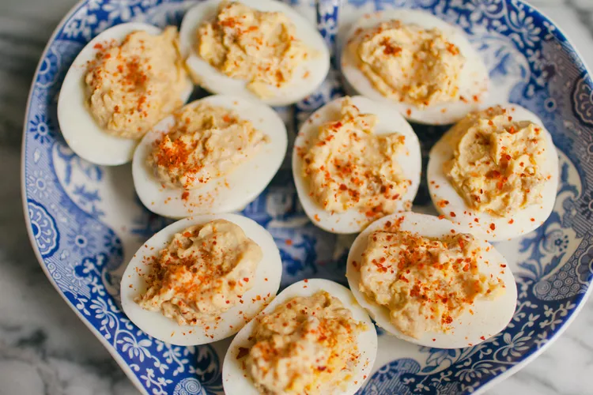

Perfect Deviled Eggs

These deviled eggs made with Worcestershire sauce and horseradish appeared on the table at every holiday and other gathering when I was growing up
Ingrediates
- 8 eggs
- ⅓ cup mayonnaise
- ⅓ cup mayonnaise
- 2 tablespoons cream-style horseradish sauce
- 1 drop hot pepper sauce, or to taste
- salt and pepper to taste
- 1 teaspoon dried parsley flakes, for garnish
- 1 teaspoon paprika, for garnish
Steps
- Place eggs into a saucepan in a single layer and cover with water by 1 inch.
- Peel cool eggs and cut in half lengthwise
- Enjoy
Home